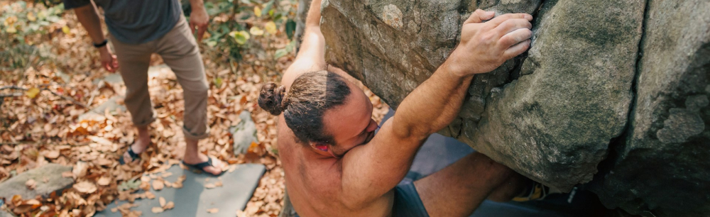

How to get started
Unlike many outdoor sports, getting started with bouldering is surprisingly simple. All you need are some climbing shoes, chalk, and a positive attitude—most gyms even rent the equipment for your first sessions. No prior experience or complex gear required!
Know Before You Go
Before you start bouldering, it's important to understand the basics of safety, technique, and etiquette. This will help you make the most of your climbing experience and ensure you're respecting the sport and other climbers.
The simple steps to getting started:
- Find a local bouldering gym or outdoor climbing area
- Wear appropriate climbing shoes and bring chalk
- Take a beginner class or ask for guidance from experienced climbers
- Start with easier problems and gradually increase difficulty
- Join a bouldering community or club.
